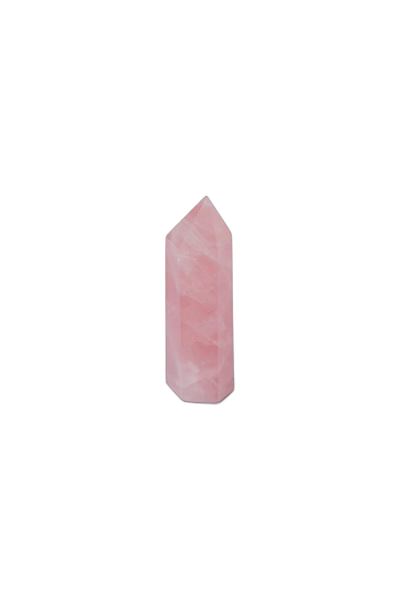

El presente
Volvé al único lugar donde la vida realmente sucede. Con mindfulness salís del piloto automático y le bajás el volumen a la ansiedad.

Un acompañamiento que integra biodecodificación, mindfulness y distinciones ontológicas para transitar la ansiedad y volver a tu centro, con método y a tu ritmo.
No se trata de silenciar lo que sentís, sino de escucharlo hasta comprender qué vino a mostrarte.
Volvé al único lugar donde la vida realmente sucede. Con mindfulness salís del piloto automático y le bajás el volumen a la ansiedad.
Ninguna emoción sobra. Aprendés a nombrarlas, habitarlas y gestionarlas, en lugar de que ellas te manejen a vos.
Tu cuerpo habla. La biodecodificación busca el sentido biológico y emocional detrás de lo que aparece, para que dejes de pelearte con vos.
No se trata de no caer, sino de volver al centro cada vez. Esa capacidad de reconstruirte es, literalmente, tu esencia resiliente.
Un recorrido para aprender a leer el sentido biológico y emocional de los síntomas y transitar lo que aparece con consciencia.
Encuentros grupales de mindfulness y gestión emocional, con herramientas simples que podés aplicar desde el primer día.
Tu práctica sostenida mes a mes: meditaciones guiadas, journaling terapéutico y dinámicas para el hogar.
Trabajo con personas que sienten que la ansiedad y el estrés les ganan la mano y que intuyen que hay algo más para entender detrás de lo que les pasa.
Integro biodecodificación, mindfulness y coaching ontológico en un acompañamiento cálido y con método. No prometo recetas mágicas: te ofrezco un espacio seguro, distinciones que ordenan y prácticas concretas para sostener el cambio.
Escribime por WhatsApp y charlamos sin compromiso sobre el momento que estás transitando y cómo puedo acompañarte.
Escribime por WhatsApp